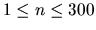
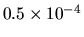

| Triangle Partition |
Suppose that a triangle and a number of points inside the triangle are given. Your job is to find a partition of the triangle so that the set of the given points are divided into three subsets of equal size.
Let A, B and C denote the vertices of the triangle. There are n points, P1, P2, ...,Pn, given
inside ABC. You are requested to find a point Q such that each of the three triangles QBC,
QCA and QAB contains the same number of points. Points on the boundary line are counted in
both triangles. For example, a point on the line QA is counted in QCA and also in QAB. If
Q coincides a point, the point is counted in all three triangles.
It can be proved that there always exists a point Q satisfying the above condition if n=3*k, with k=1,2... In this problem, n can be any number, and there will be at least a valid point Q for every test case. The problem will be easily understood from the figure below.
The first integer n is the number of points, such that . The coordinate of a point Pi is given by (xi,yi). xi and yi are integers between 0 and 1000.
The coordinates of the triangle ABC are fixed. They are A(0, 0), B(1000, 0) and C(0, 1000).
Each of Pi is located strictly inside the triangle ABC, not on the side BC, CA nor AB. No two
points can be connected by a straight line running through one of the vertices of the triangle.
Speaking more precisely, if you connect a point Pi with the vertex A by a straight line, another
point Pj never appears on the line. The same holds for B and C.
The end of the input is indicated by a 0 as the value of n.
For each data set, a line of this format should be given. No extra lines are allowed. On the contrary, any number of space characters may be inserted before qx, between qx and qy, or after qy.
Each of qx and qy should be represented by a fractional number
(e.g., 3.1415926) but not with an
exponential part (e.g., 6.023e+23 is not allowed). At least seven digits
should follow the decimal point.
Note that there is no unique ``correct answer'' in this problem. In general, there are infinitely
many points which satisfy the given condition. Your result may be any one of these ``possible answers''.
In your program, you should be careful to minimize the effect of numeric errors in the handling
of floating-point numbers. However, it seems inevitable that some rounding errors exist in the
output. We expect that there is an error of

in the output, and will judge your result accordingly.
3 100 500 200 500 300 500 5 100 300 100 600 200 100 200 700 500 100 0
166.6666666 555.5555555 275.0000000 145.0000000
Note: As mentioned above, the results shown here are not the only solutions. Many other coordinates for the point Q are also acceptable.